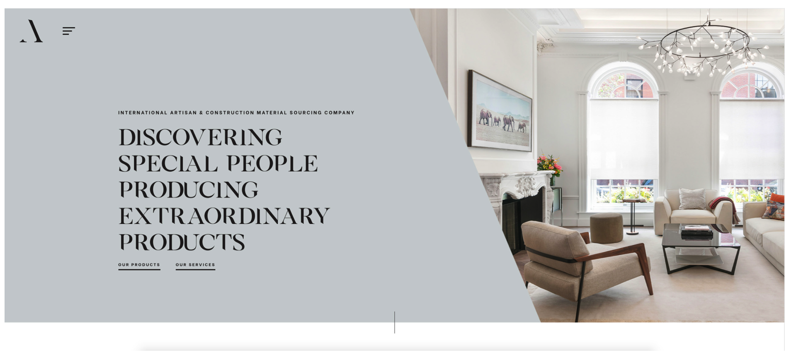

Work
Digerati Solutions
Date
November 2020
Category
UX/UI
Software Used
Figma, Axure
* Please note some information on this project has been censored/modified due to client privacy.
I was tasked with redesigning an existing website for my client who is in the education sector. The client felt that the current system was outdated, uninspiring, disengaging and not user friendly. The client wanted the redesign to establish its presence in the industry and attract new students. They needed the website to be both user friendly from the staff and the student's perspective.
Pre-strategy meeting prep
Before the strategy meeting, I selected a variety of websites to show to the client. I did this because it would help me understand the the design style the client was going for. I got to see what the client's likes and dislikes were which helped me design something that was more closely aligned to their end vision.
Examples of some of the websites I showed

Goals and Expectations
During the strategy meeting I familiarised myself with the branding and goals of the institution, the reasons for the website refresh, long term goals of the site and the users of the website.
Personas
From then, I was able to develop personas that portray the type of users the site is hoping to attract and retain. I considered all aspects of the personas including their age, occupation, technology they normally use, context, aim of using the website, how the website will fulfil their needs and their journey maps.
Site map
After finalising the personas and the design direction of the site, I proposed a site map which outlined the main menu items, the sub menu items and the links between each page.
User journeys
I developed several different versions of personalised user journeys to understand how each persona would navigate through the site. This to me was important because the user's journey needed to be as simple and easy to navigate as possible. A potential user of the site would not view all of the pages, they would most likely visit the site for a certain purpose. So how might we make this experience as seamless and simple for them?
Wireframes
After developing my user journeys, I commenced my UX design portion of the project. I studied the personas, the site map, the user journeys to determine how a user would view each of the pages, what aspects of the page require more real estate and attention and what the structure of the page looks like in terms of content hierarchy.
Style Tiles
Simultaneously, I also developed different iterations of style tiles which consists of logos, colours (primary, secondary, tertiary, accent), typography, buttons, forms, images and icons.
Finally, the design
Using the above research and documentation, I was able to build an interface that aligned to the client's brief. Of course, it wasn't easy. There were many instances of rework and going back and forth, but I was glad to be able to use my research and understanding of the client's needs to design something they actually wanted.
Home Page Design

Inner Page Design

Reflections
This was one of the first times I was able to really be involved from the initial research stage right through to designing the user experience, user interface and then ultimately handing it off to the developer. I understood from this project how important it is to thoroughly understand the users that you are designing the site for, as the users and they way they interact with your site really dictates how you design out your site.